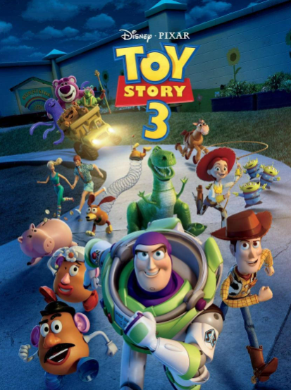

← Voltar para o catálogoAnimação
Ratatouille
Um rato apaixonado por culinária forma uma parceria improvável com um jovem ajudante de cozinha em Paris.
DireçãoBrad Bird
GêneroAnimação
Um rato apaixonado por culinária forma uma parceria improvável com um jovem ajudante de cozinha em Paris.